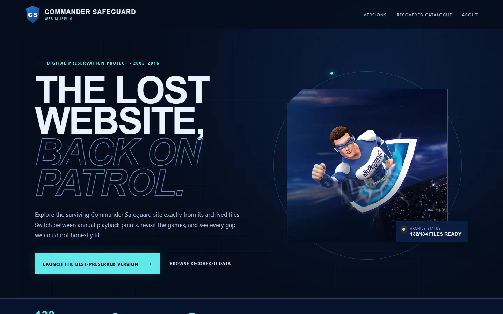
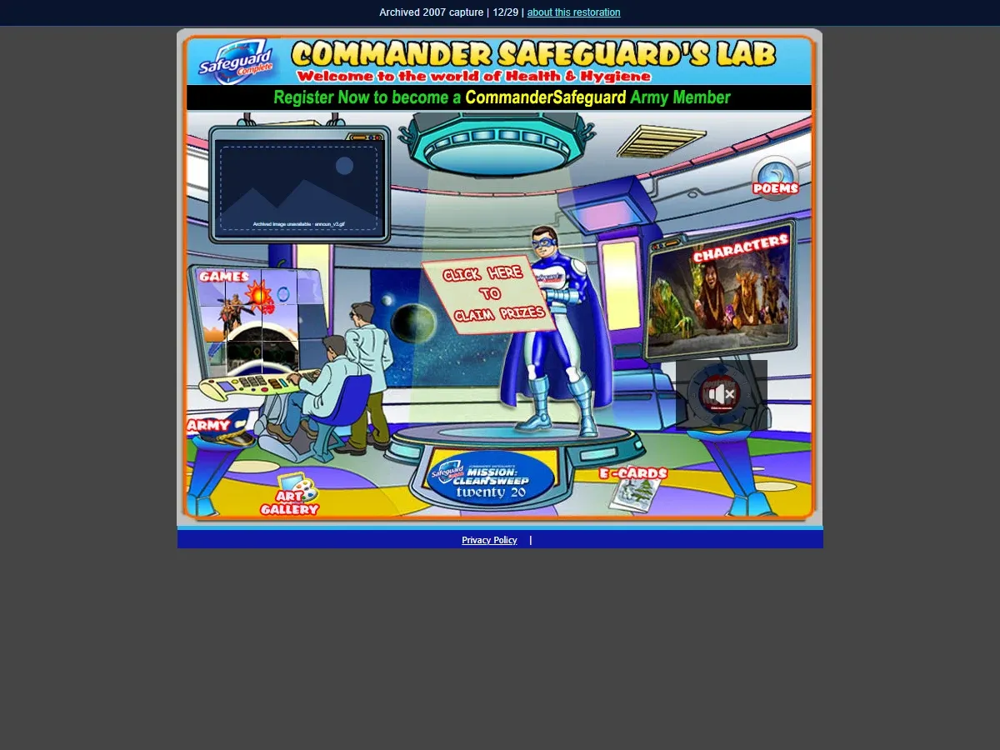
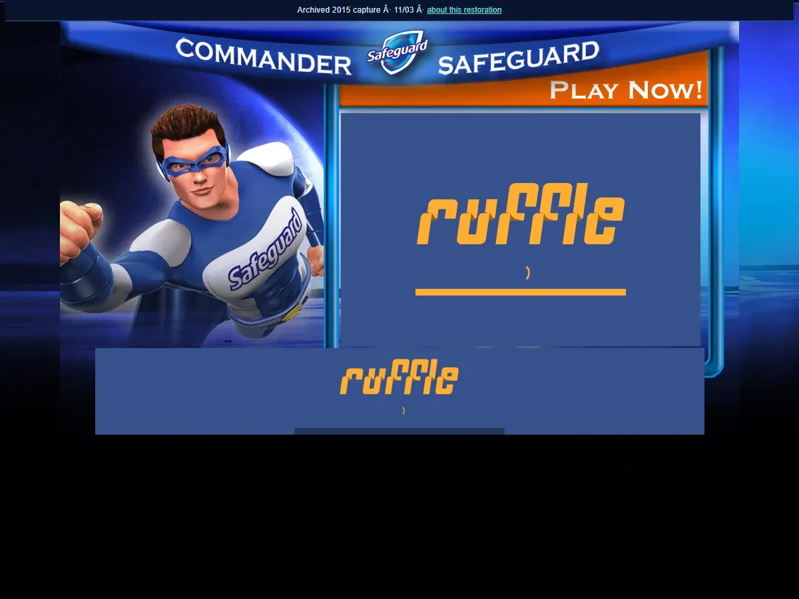
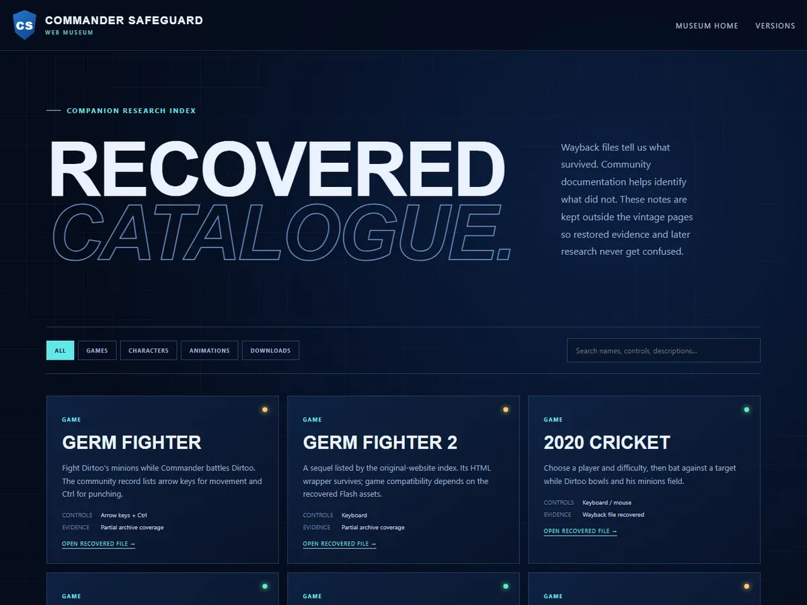

The problem
The site lived at two domains over eleven years. Flash is dead in every browser, many assets were never captured, and the most obvious domain only kept unreadable robots records.
Case study Archive engineering
A Pakistani childhood mascot site from 2005–2016, rebuilt from the Internet Archive. Ten playback points across three layout eras, served from original Wayback files, with surviving Flash games playable again through the Ruffle emulator.




The site lived at two domains over eleven years. Flash is dead in every browser, many assets were never captured, and the most obvious domain only kept unreadable robots records.
Seven payloads can't be replayed by Wayback, and some game files were never archived. Those are documented as gaps — no substitute games are passed off as originals.
The full museum runs locally (it serves ~770 archived files). Ask me for a live walkthrough.